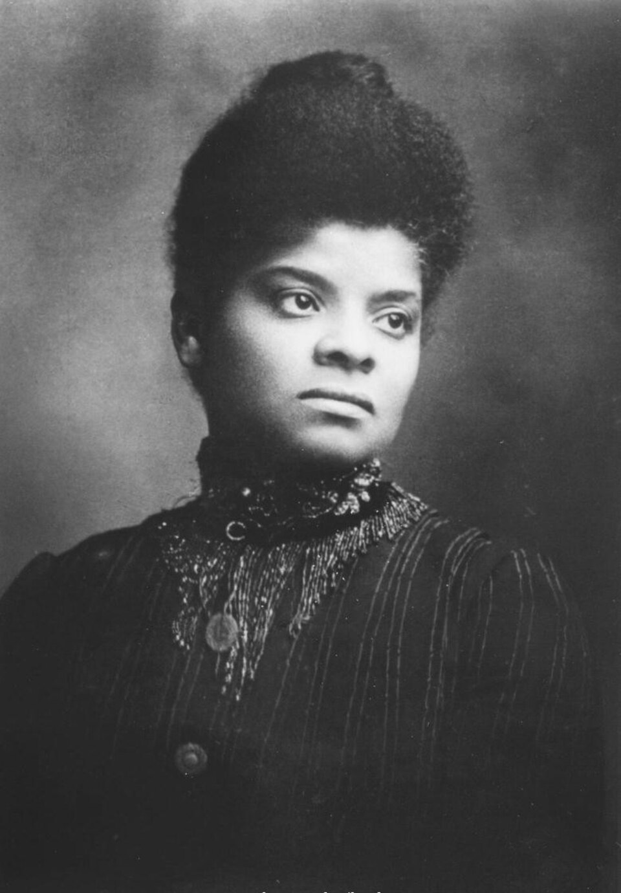
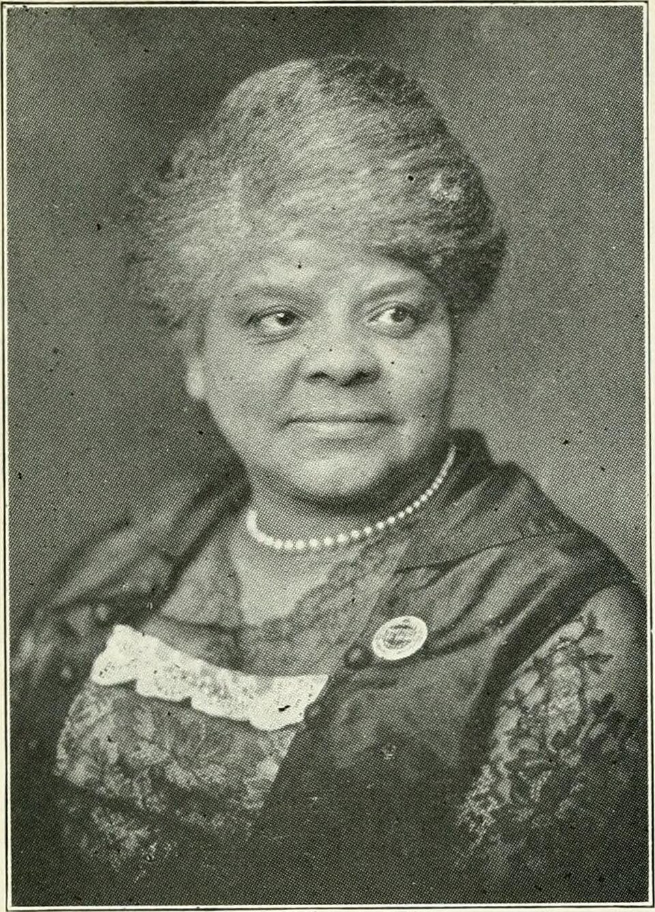
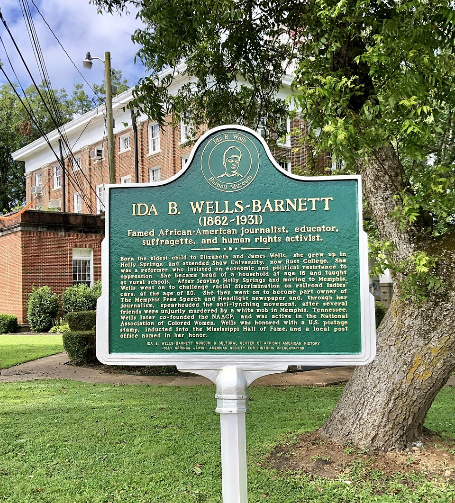
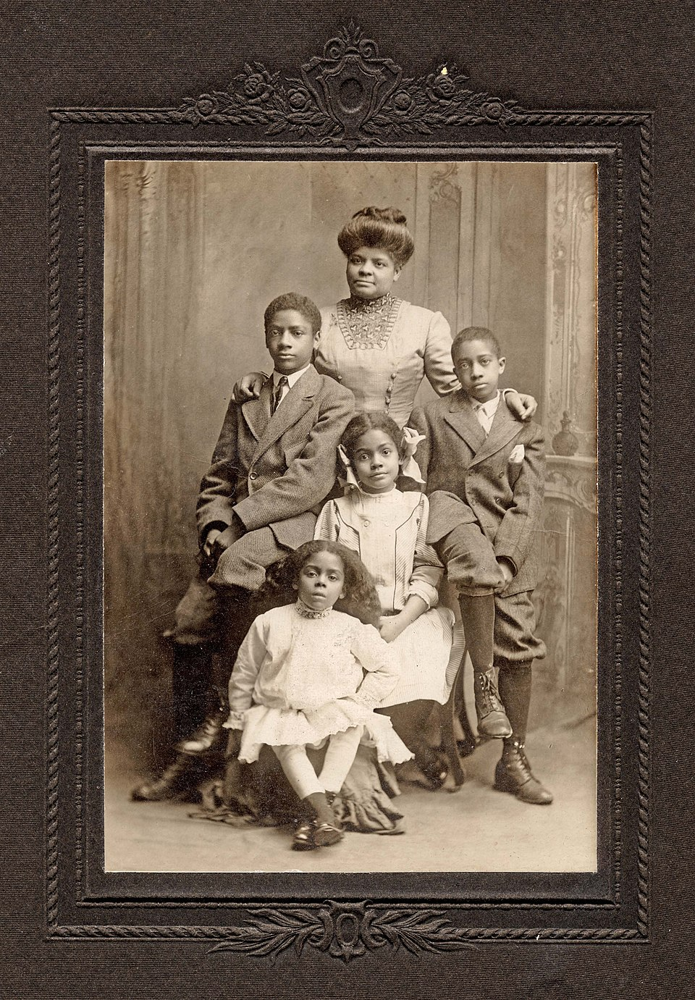
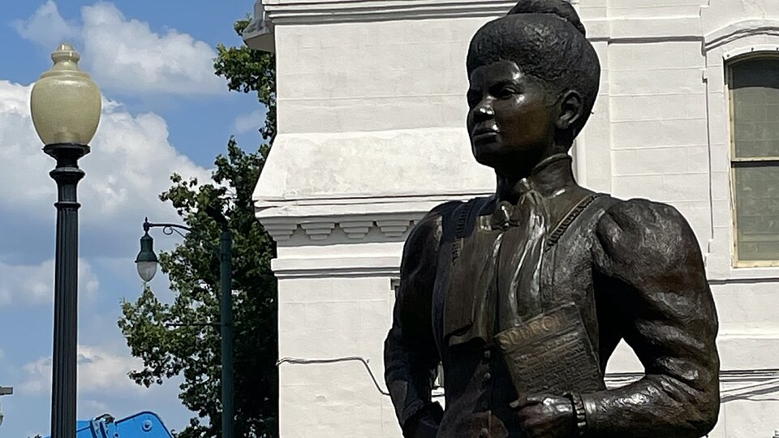

1862
Ida B. Wells nasce em Holy Springs, Mississippi, filha de escravizados que conquistam liberdade. Cresce em contexto de pós-emancipação marcado por esperança mas também por racismo sistêmico crescente.

"A maneira de corrigir os erros é lançar a luz da verdade sobre eles."
Ida B. Wells-Barnett
Foto: Chicago Daily Tribune / Wikimedia Commons — autor desconhecido, domínio público.
Trajetória de uma jornalista que documentou horror do racismo e se recusou a calar diante da injustiça

Foto: Wikimedia Commons - Barnett, domínio público.
Ida B. Wells nasceu em 1862, no Mississippi, durante os últimos anos da escravidão formal nos Estados Unidos. Filha de escravizados que conquistaram liberdade durante a Guerra Civil, Ida cresceu em contexto de pós-emancipação repleto de contradições — liberdade formal mas opressão real, voto garantido na teoria mas negado na prática. Seus pais enfatizavam educação como ferramenta de liberação, e Ida demonstrou desde jovem inteligência excepcional e independência de espírito. Tornou-se professora aos 15 anos, profissão raramente acessível a mulheres negras, e usou essa posição para educar jovens negros sobre história, direitos, e dignidade. Porém, percebia cada vez mais que educação isolada era insuficiente frente ao sistema de opressão racial crescente que os "Códigos Jim Crow" estava consolidando no Sul.
Ida B. Wells transformou-se em jornalista investigativa — uma das primeiras mulheres negras a exercer essa profissão — e dedicou sua carreira a documentar a realidade brutal do racismo: linchamentos, injustiça legal, exploração econômica, e negação de direitos políticos. Através de suas investigações meticulosas e reportagens coragem publicadas em jornais negros, Ida produzia evidência irrefutável de que o sistema racial americano era crime contra a humanidade. Enfrentou ameaças de morte, foi forçada a fugir do Sul, viu seu jornal ser destruído, mas nunca abandonou sua missão de ser voz dos negros marginalizados. Fundou organizações, foi uma das primeiras mulheres a participar na fundação da NAACP, e continuou lutando por sufrágio feminino, direitos trabalhistas, e justiça racial até seu último dia. Ida B. Wells-Barnett foi a rara combinação de intelectual rigorosa, ativista corajosa, e mulher que recusava-se categoricamente a aceitar a sujeição que a sociedade tentava lhe impor.
Após investigar os linchamentos de Thomas Moss, Calvin McDowell e William Stewart, Ida publicou Southern Horrors (1892) e A Red Record (1895), reunindo relatos e estatísticas para contestar as justificativas usadas pela violência racial. Em 1913, fundou o Alpha Suffrage Club, ampliando a participação política das mulheres negras.
Ida B. Wells nasce em Holy Springs, Mississippi, filha de escravizados que conquistam liberdade. Cresce em contexto de pós-emancipação marcado por esperança mas também por racismo sistêmico crescente.
Ida demonstra brilho intelectual excepcional. Torna-se professora aos 15 anos, profissão rara para mulheres negras. Começa a questionar desigualdades que experiencia e que seus alunos enfrentam.
Ida é ejetada de trem por não aceitar segregação racial nas acomodações. Processa ferrovia em corte, vence caso inicial mas depois é revertido. Aprende que lei não é proteção se não há poder para fazê-la valer.
Ida começa a escrever para jornais negros, usando pseudônimo "Iola". Seus escritos ganham reconhecimento pela coragem e análise penetrante de questões raciais. Torna-se jornalista profissional e co-editora de jornal.
Amigos próximos de Ida são linchados por ser acusados falsamente de assalto. Ela investiga o linchamento, descobrindo que vítimas eram na verdade competidores econômicos. Publica investigação denunciando a falsidade das acusações.
Ida fuge para o Norte após morte ser ameaçada. Continua investigando linchamentos, publicando investigações rigorosas documentando horror racial. Seu trabalho ganha reconhecimento nacional e internacional.
Ida funda organizações de defesa dos direitos civis, participa na fundação da NAACP, ativa em movimentos pelo sufrágio feminino, luta por direitos trabalhistas. Continua escrevendo, falando, organizando.
Ida B. Wells-Barnett falece em 1931, deixando legado de jornalismo investigativo que expôs horror do racismo, ativismo que transformou movimentos pelos direitos civis, e vida que não aceitou marginalizacão.

Imagem: MISS Ida Wells-Barnett Image from page 73 of "The story of the Illinois Federation of Colored Women's Clubs" (1922).jpg
Ida B. Wells-Barnett é extraordinária porque viveu em um dos períodos mais brutais de opressão racial na América do Norte — a consolidação dos "Códigos Jim Crow" e da supremacia branca violenta — e não apenas documentou essa brutalidade, mas desafiou-a publicamente. Em contexto onde mulheres negras eram esperadas a calar-se e obedecer, Ida usava sua voz e sua inteligência aguda como armas. Seus investigações de linchamentos não eram apenas denúncias morais — eram provas irrefutáveis baseadas em fatos, documentação, entrevistas. Transformava jornalismo em arma de resistência, provando que palavra escrita podia ser tão revolucionária quanto ação direta.
O que torna Ida ainda mais notável é sua recusa a ser silenciada pela violência. Apesar de ameaças de morte, apesar de ser forçada a fugir do Sul, apesar de sofrer ostracismo por sua radicalism, Ida continuava escrevendo, falando, organizando. Sua coragem não era inconsciente — ela entendia os riscos que corria — mas recusava-se a deixar que o medo a paralisasse. Além disso, Ida entendeu precocemente que opressão racial e opressão de gênero eram conectadas, que libertação negra era impossível sem libertação feminina. Seu ativismo sempre integrou direitos das mulheres com direitos raciais.
Por tudo isso, Ida B. Wells-Barnett é figura singular na história americana — uma mulher negra que alcançou poder intelectual e moral enormes, que deixou marca indelével na história de resistência, e cuja vida provou que opressão não é natural ou inevitável, mas crime que pode ser documentado, denunciado, e desafiado.
Influência sobre jornalismo investigativo, movimento pelos direitos civis, e feminismo negro.
O legado de Ida B. Wells-Barnett está na transformação que suas investigações provocaram. Suas publicações sobre linchamentos não apenas documentavam horror — transformavam opinião pública, forçavam governo a confrontar realidades que preferia esconder, inspiravam organizações de resistência. Seu trabalho estabeleceu padrão de jornalismo investigativo rigoroso que buscava verdade através de pesquisa meticulosa. Décadas depois, jornalistas continuariam citando Ida como inspiração para investigação de injustiça social. Além disso, suas documentações de linchamentos tornaram-se provas históricas definitivas de que sistema legal americano era máquina de opressão racial, não instituição de justiça.
Além disso, Ida B. Wells-Barnett foi uma das primeiras vozes a articular feminismo negro — ideia de que mulheres negras experienciam opressão específica que é resultado de convergência de racismo e sexismo, e que sua libertação requer movimento que integre ambos. Seus escritos sobre como mulheres negras eram especialmente vulneráveis a violência sexual e lynchagem estabeleceu análise que foi fundamental para feminismo negro contemporâneo. Seu legado continua inspirando jornalistas, ativistas, e pensadores que buscam desmascarar injustiça através de investigação rigorosa e compromisso inabalável com verdade e justiça. Ida B. Wells-Barnett provou que uma mulher negra sozinha, armada com inteligência, coragem, e compromisso com verdade, podia desafiar sistemas de poder imensamente maiores e deixar marca que perduraria por séculos.
Fotos e registros históricos.

Placa em homenagem a Ida B. Wells-Barnett, localizada em Holly Springs, Mississippi, destacando sua trajetória como jornalista, educadora, sufragista e ativista dos direitos civis nos Estados Unidos.
Imagem: Ida B. Wells-Barnett marker H.S.jpg

Ida B. Wells-Barnett ao lado de seus filhos Charles, Herman, Ida e Alfreda, em 1909.
Fonte: Wikimedia Commons — autor não atribuído, domínio público.

Estátua em homenagem a Ida B. Wells-Barnett, representando sua trajetória como jornalista, ativista dos direitos civis e defensora da justiça racial nos Estados Unidos.
Foto: Wikimedia Commons — Southern Hollows/S. Liles, licença Creative Commons Attribution-Share Alike 4.0.
Biografias institucionais, acervos, fontes primárias e documentos históricos usados nesta página e na base de conhecimento.
Fonte para nascimento, família, formação, docência, episódio ferroviário, Free Speech, campanha contra os linchamentos, sufrágio, NAACP, morte e legado. Link: https://www.nps.gov/people/idabwells.htm
Perfil da Library of Congress sobre jornalismo, destruição da redação, A Red Record, campanhas internacionais, National Afro-American Council e participação na fundação da NAACP. Link: https://www.loc.gov/collections/african-american-perspectives-rare-books/articles-and-essays/daniel-murray-a-collectors-legacy/ida-b-wells-barnett/
Material da Library of Congress sobre o método investigativo de Wells, o linchamento de seus amigos, a destruição do jornal e sua análise das funções políticas e econômicas da violência racial. Link: https://www.loc.gov/exhibits/odyssey/educate/barnett.html
Exposição da Library of Congress sobre o Alpha Suffrage Club e a participação de Wells-Barnett na parada sufragista de Washington em 1913. Link: https://www.loc.gov/exhibitions/women-fight-for-the-vote/about-this-exhibition/new-tactics-for-a-new-generation-1890-1915/new-tactics-and-renewed-confrontation/ida-b-wells-barnett-holds-her-ground/
Exposição da Library of Congress sobre a campanha contra os linchamentos, o Anti-Lynching Bureau, a organização da NAACP e as divergências de Wells com a liderança da associação. Link: https://www.loc.gov/exhibits/naacp/prelude.html
Acervo da University of Chicago Library com manuscritos, correspondência, diários, fotografias, registros do processo ferroviário e originais de Crusade for Justice. Link: https://www.lib.uchicago.edu/collex/collections/wells-ida-b-papers/
Página da University of Chicago Press sobre a autobiografia, sua história de publicação e a atuação de Wells como professora, jornalista, conferencista, sufragista e organizadora. Link: https://press.uchicago.edu/ucp/books/book/chicago/C/bo49856620.html
Síntese biográfica com referências sobre infância, carreira na imprensa, Southern Horrors, A Red Record, The Reason Why e organizações de mulheres negras. Link: https://www.womenshistory.org/education-resources/biographies/ida-b-wells-barnett
Página oficial do Pulitzer sobre a Menção Especial concedida postumamente em 2020 por sua reportagem sobre a violência contra afro-americanos na era dos linchamentos. Link: https://www.pulitzer.org/winners/ida-b-wells
Conheça outras trajetórias marcantes da luta por justiça e transformação social.

Crédito da imagem
Bartolina Sisa, líder indígena cuja resistência ajudou a marcar a luta dos povos originários contra a opressão colonial.
Saiba mais
Imagem: representação de Bartolina Sisa em cédula boliviana — via Banco Central da Bolívia .
Estrategista quilombola cuja resistência ajudou a marcar a luta negra por liberdade no Brasil lorem.
Saiba mais
Crédito da imagem
Intelectual fundamental para os debates sobre feminismo negro, cultura e desigualdade racial no Brasil.
Saiba mais
Crédito da imagem
Liderança indígena e jurista que ampliou a presença dos povos originários nos espaços de decisão.
Saiba mais